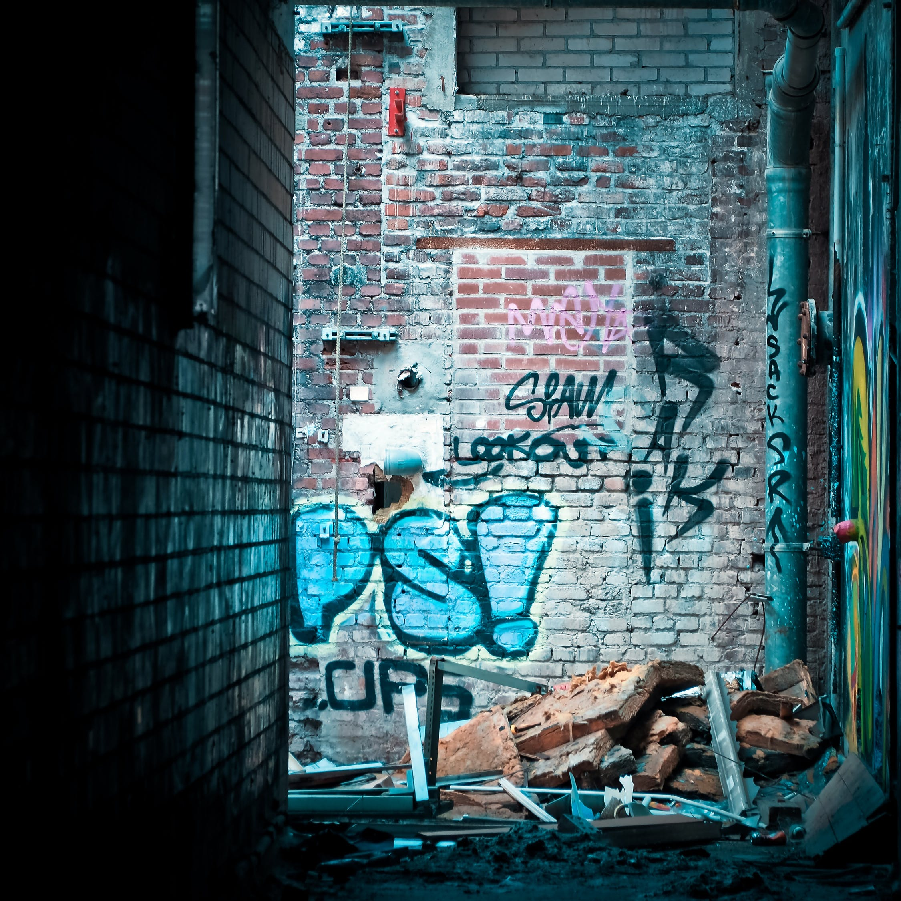

You panic, terrified of being potentionally attacked by them, and do the first thing that pops into your mind: pretend to be a raccoon. There is absolutely no way this can potentionally backfire on you at all. You do a little squeak chirp in an attempt to emulate the sounds of a raccoon before saying that you're just trying to look for some trash to eat, fellow raccoons. The thickest raccoon speaks again, "Oh in that case, welcome! Hey Jerry— get this goodfella some food!" One raccoon— Jerry, nods at you to follow him out of the trash bin and offers you some trash to eat from the food trash pile the raccoons had been making. It doesn't look good. Actually, it looks like trash. As you're taking in the horrible smell, you think you hear a raccoon from inside the bin quietly say "BADA-BING BADA-BOOM!" before seeing an unidentifiable object thrown into the trash pile. Do you accept their offer and take their "food"?